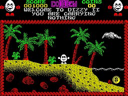

Introduction
Dizzy the Egg is known for its unique blend of adventure, puzzle-solving, and platforming gameplay. Players control Dizzy, a lovable egg, as he embarks on various adventures in a whimsical world full of challenges and quirky characters.

Game Mechanics
1. Inventory System: Central to the gameplay is Dizzy's ability to collect and carry items in his inventory. These items are essential for solving puzzles and progressing through the game.
2. Puzzle Solving: Dizzy games are renowned for their intricate puzzles. Players must use their wits and the items in Dizzy's inventory to solve these puzzles. Some puzzles require careful observation, while others demand creative thinking.
3. Platforming: Dizzy must navigate through various platforms, avoiding hazards and enemies. Precision jumping and timing are often required to progress.
4. Interaction: Players can interact with other characters in the game, some of whom offer helpful advice or trade items with Dizzy.
Challenges and Adventures
Dizzy's adventures are filled with a wide range of challenges:
- Exploration: Dizzy explores diverse environments, from dense forests to eerie castles, uncovering hidden secrets and pathways.
- Item Collection: Gathering specific items is often necessary to unlock new areas or advance the storyline.
- Enemy Encounters: Dizzy encounters various enemies and obstacles that must be overcome through careful navigation and problem-solving.
- Mystery Solving: Each game often features an overarching mystery or quest that players must solve to complete the adventure.
Series Evolution
The Dizzy series evolved over the years, introducing new gameplay elements and improvements while retaining its core charm and humor. Some titles in the series even offered different gameplay styles, such as "Fast Food Dizzy," which focused on delivering fast food orders.
Legacy
Dizzy's unique gameplay and memorable adventures have left a lasting legacy in the world of gaming. The series continues to be celebrated by retro gaming enthusiasts.
Conclusion
Dizzy the Egg's gameplay is a delightful combination of adventure, puzzle-solving, and platforming. The charming world, engaging puzzles, and creative gameplay have made it a beloved classic that remains enjoyable for both nostalgic fans and new players.